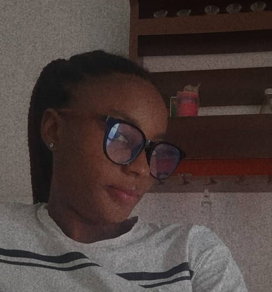

About Me
My name is Assumpta Okpanachi Chidinma. Am from nigeria and i based in lagos state, the first child of my parents. I love reading novels and i have a great passion and love for coding and i want to see myself doing great in the future.Am 20 years old and I love myself and my family.Am 5 feet tall and chocolate in complextion as i am been refered to as a beautiful young lady
Lagos, Nigeria
Lagos is the largest city in Nigeria and one of the fastest-growing cities in the world. It is known for its vibrant economy, rich culture, and bustling lifestyle. As the commercial hub of Nigeria, Lagos hosts major industries, financial institutions, and tech startups, making it a key driver of the country's economy. The city is famous for its lively markets, nightlife, and cultural landmarks like the National Museum, Nike Art Gallery, and Freedom Park. Lagos also boasts beautiful beaches, such as Tarkwa Bay and Elegushi Beach, attracting tourists and locals alike. Despite its opportunities, Lagos faces challenges like traffic congestion, overpopulation, and infrastructural strain. However, its energy, diversity, and entrepreneurial spirit continue to make it a dynamic and influential city in Africa.